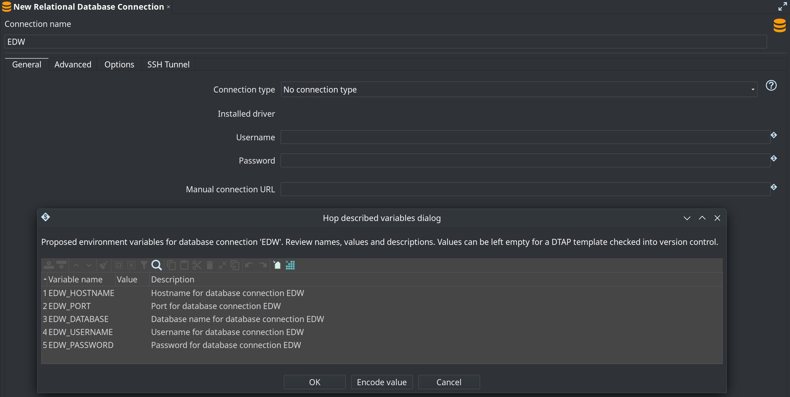
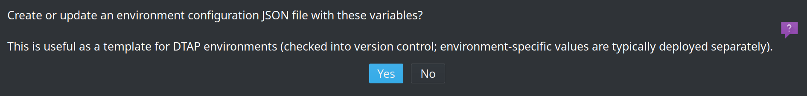
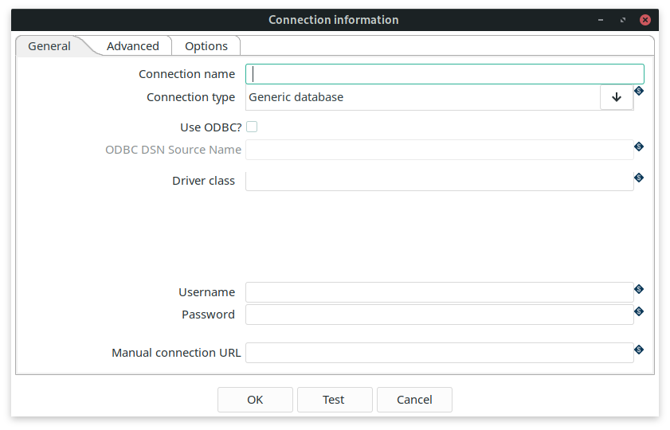

Database Plugins
Apache Hop has optimized support for many database types. If you are using an unsupported database, you can always create a generic connection.
To create a database connection go to the metadata perspective, right-click on Relational Database Connections and select New.
The connection is saved in a central location and can then be used by all pipelines and workflows. If you have set your project to work with Hop, the database information will be in the ${PROJECT_HOME}/metadata/rdbms folder. For each connection, a separate .json file will be generated in this folder. This json file will have the name of the connection and will contain all of the connection information.
| Prefer variables for host, port, database name, username and password instead of hard-coded values. The same connection metadata can then run unchanged in Development, Test, Acceptance and Production (DTAP) by loading different environment configuration files. See Projects and environments for how lifecycle environments work. |
Generate environment variables
Best practice is to parameterize relational database connections with environment variables. The connection editor can generate those variables for you so you do not have to invent names or edit configuration files by hand in several places.
How to use it
-
Open a relational database connection in the Metadata perspective and give it a name (for example
EDW). -
Optionally fill in the current host, port, database, username, password and/or manual URL values.
-
Click Generate variables in the button bar (next to Explore and Test).
-
Review the proposed variables in the dialog. You can change names, values and descriptions. Leave values empty when you want a template without secrets or environment-specific data.

-
When asked, choose whether to create or update an environment configuration JSON file, and pick a filename (for example
${PROJECT_HOME}/EDW-config.json).
-
The editor replaces the connection fields with variable expressions such as
${EDW_HOSTNAME}.
For a connection named EDW, Hop typically proposes:
| Variable | Purpose | When proposed |
|---|---|---|
| Server host name | Always |
| Port number | Always |
| Database / catalog name | Always |
| Username | When the username field is available for the connection type |
| Password | When the password field is available for the connection type |
| Manual JDBC URL | Only when a manual URL is filled in |
The connection name is turned into a variable prefix (upper case; characters other than letters, digits and underscore become _). For example My DB becomes MY_DB_HOSTNAME, MY_DB_PORT, and so on.
Each variable gets a short description (for example “Hostname for database connection EDW”). In the review dialog you can encode sensitive values with the Encode value action if you store them encrypted in the configuration file.
After the file is written, add it to the configuration files list of the relevant lifecycle environment so Hop loads the variables when that environment is selected. Paths in the file dialog may use variables such as ${PROJECT_HOME}; Hop resolves them when reading or writing the file.
DTAP and empty configuration files
Development, Test, Acceptance and Production (DTAP) usually need the same variable names and the same connection metadata, but different host, credentials and sometimes database names.
A practical pattern is:
-
Generate once in the project Use Generate variables and create a configuration JSON that lists the variable names (and descriptions) for the connection. Clear the values in the review dialog (or leave them empty) so the file contains structure only—no hostnames, passwords or other secrets. Commit this empty or minimal template to version control with the project (or in a shared config location your team uses for templates).
-
Fill values per environment outside the main project tree For each lifecycle stage (Development, Test, Acceptance, Production), maintain a copy of that configuration file with the real values for that stage. Those files are typically not the empty template: they are deployed with the server, CI agent or runtime, or kept in a separate repository/secure store. Point each Hop environment at its own configuration file(s).
-
Keep pipelines and connection metadata environment-agnostic Because the RDBMS connection stores only expressions like
${EDW_HOSTNAME}, the same metadata under${PROJECT_HOME}/metadata/rdbmsworks in every stage. You switch behavior by selecting a different environment (and therefore a different set of variable values), not by editing connections or pipelines.
| Store environment-specific configuration files outside the project home when they contain secrets or production endpoints. See the tip in Environments: keep them out of the project folder and consider a separate version control repository for environment configs. |
{
"variables" : [ {
"name" : "EDW_HOSTNAME",
"value" : "",
"description" : "Hostname for database connection EDW"
}, {
"name" : "EDW_PORT",
"value" : "",
"description" : "Port for database connection EDW"
}, {
"name" : "EDW_DATABASE",
"value" : "",
"description" : "Database name for database connection EDW"
}, {
"name" : "EDW_USERNAME",
"value" : "",
"description" : "Username for database connection EDW"
}, {
"name" : "EDW_PASSWORD",
"value" : "",
"description" : "Password for database connection EDW"
} ]
}A Development environment file might set EDW_HOSTNAME to localhost and use local credentials; Production would point at the production host and credentials—same variable names, different values, same project metadata.
Adding JDBC drivers
Apache Hop ships the JDBC drivers it is allowed to redistribute - those under a license compatible with the Apache License - in the lib/jdbc folder of your installation. For databases whose driver has a restricted license, or that simply isn’t bundled, Hop can download the driver for you on demand, or you can add it manually.
The connection editor shows the installed driver and its version for the selected database type. When no driver is installed but one is available to download, a Download driver button appears next to it.
Downloading a driver on demand
Apache Hop knows the Maven coordinates of the JDBC driver for most database types and can download it - together with the dependencies it needs - from a public repository (Maven Central by default) at your request. There are three ways to do this:
-
In the GUI: open the database connection editor and select your database type. If the driver isn’t installed yet and a download is available, click Download driver. For restricted drivers (proprietary, or copyleft licenses such as LGPL/GPL) you first have to read and accept the vendor’s license in the dialog. The driver is downloaded into your JDBC folder and hot-loaded, so you can usually test the connection without restarting Hop.
-
From the command line:
hop driver listlists every database type with a downloadable driver, its license category and whether it is already installed.hop driver install <id>downloads and installs it, for example:hop driver list hop driver install oracle --accept-license--accept-licenseis required for restricted (LIC=X) drivers. Use--driver-versionto pick a specific version and--repoto download from an internal mirror. -
In a container: set the
HOP_DRIVERS_DOWNLOADenvironment variable (andHOP_DRIVERS_ACCEPT_LICENSE=truefor restricted drivers) on the Hop Docker image to install drivers automatically at start-up. See the Docker container documentation for details.
Apache Hop never bundles, hosts or mirrors restricted drivers. They are downloaded from Maven Central (or the vendor) onto your own machine, at your explicit request, under the vendor’s license.
Adding a driver manually
Some databases (typically older or proprietary ones) do not publish their JDBC driver to a public repository. For those, download the driver from the vendor - the documentation for each database type below points you to the download location - and copy the jar into the lib/jdbc folder or into a folder listed in HOP_SHARED_JDBC_FOLDERS.
Set the HOP_SHARED_JDBC_FOLDERS environment variable to a folder that contains your additional JDBC drivers. Having them in a central folder helps you to easily upgrade or change your Apache Hop installation, without the need to add your JDBC drivers every time. This variable accepts a comma separated list to point to multiple directories; the default value when not set is lib/jdbc, e.g. <PATH_TO_YOUR_HOP_INSTALLATION>/lib/jdbc,<PATH_TO_YOUR_JDBC_FOLDER>. When you download a driver, Hop installs it into the first folder in this list that isn’t lib/jdbc, so your downloaded drivers stay separate from the bundled ones and survive upgrades.
To avoid conflicts, make sure you only have one driver for each database, and make sure you don’t have multiple copies of your drivers, e.g. both in HOP_SHARED_JDBC_FOLDERS and the hop/lib/jdbc folder.
Generic connection
When a specific database type is not yet available for the database you want to use, you can use the generic connection. To use a generic connection you have to copy your jdbc driver to the <PATH_TO_YOUR_HOP_INSTALLATION>/lib/jdbc folder or in your HOP_SHARED_JDBC_FOLDERS folder.

Check the documentation for your databases' driver class and URL syntax to create your connection.
In the Driver Class field you specify your driver class, for example if you use PostgreSQL the class is org.postgresql.Driver.
Advanced properties
The advanced tab lets you specify a number of additional properties for your database connection.
| Property | Description |
|---|---|
Supports the Boolean data type | is Boolean supported? |
Supports the Timestamp data type | is Timestamp supported? |
Quote all identifiers in database | Add quotes around all identifiers for generated SQL statements. |
Force all identifiers to lower case | Change all identifiers to lower case for generated SQL statements. |
Force all identifiers to upper case | Change all identifiers to upper case for generated SQL statements. |
Preserve case of reserved words | Don’t change the casing for all reserved words for generated SQL statements. |
The preferred schema name | The schema name to use by default (can be overruled). |
The SQL statements to run after connection (; separated | a semicolon (';') separated list of SQL statements that need to be executed after the connection is created. |
Options
The options table contains a list of key/value pairs that can be added to your JDBC driver. Check your database JDBC driver documentation for the right syntax.
For example, to add additional options to a MS SQL database, you can add options to achieve a JDBC URL like the one below. Apache Hop will take care of these properties in the background, there usually is no need to manually modify the JDBC URL (but you can, and in a Generic connection, you have to).
jdbc:sqlserver://localhost:1433;" +
"databaseName=AdventureWorks;integratedSecurity=true;" +
"encrypt=true;trustServerCertificate=trueintegratedSecurity | true |
encrypt | true |
trustServerCertificate | true |
SSH tunnel
When a database is only reachable through a bastion (jump) host, Hop can open an SSH tunnel for you before connecting, without the need for a separate, externally managed tunnel. Enable this on the SSH Tunnel tab of the database connection dialog.
With the tunnel enabled, the Host Name and Port on the General tab describe the remote database as seen from the SSH server. Hop opens an SSH session to the configured SSH host, forwards a dynamically allocated local port to that remote database, and then connects the JDBC driver to localhost on the forwarded port.
| Property | Description |
|---|---|
Enable SSH tunnel | Open an SSH tunnel before connecting to the database. |
SSH server host name | Host name or IP address of the SSH (bastion) server. |
SSH server port | SSH server port, defaults to |
SSH username | User name to authenticate on the SSH server. |
SSH password | Password to authenticate on the SSH server (when not using a private key). |
Use private key authentication | Authenticate with a private key file instead of a password. |
Private key file | Path to the private key file used for authentication. |
Passphrase | Optional passphrase protecting the private key. |
SSH tunnel with a manual JDBC URL
Because the local port of the tunnel is allocated dynamically at runtime, you can’t hard-code it into a manual JDBC URL. For connection strings that can’t be expressed with the standard host/port/database template - for example an Oracle TCPS descriptor - Hop exposes the forwarded port through the ${sshTunnel.localPort} variable.
Set a manual URL that points at localhost and reference the variable for the port. Hop resolves it after the tunnel is established:
jdbc:oracle:thin:@(DESCRIPTION=(ADDRESS=(PROTOCOL=TCPS)(HOST=localhost)(PORT=${sshTunnel.localPort}))(CONNECT_DATA=(SID=XYZ)))The Host Name and Port on the General tab still define the remote end of the tunnel; the manual URL only describes how the driver connects to the local end. When no manual URL is set, Hop builds the standard URL for the database type using localhost and the forwarded port automatically.
Connection and socket timeouts
If a database host becomes unreachable at the wrong moment (for example a half-open TCP connection that is never answered), a transform can block indefinitely while it waits for the driver. This makes a pipeline appear to "hang" during initialization, even though the databases themselves are healthy.
Two variables set a default timeout for every JDBC connection Hop opens:
| Variable | Default | Description |
|---|---|---|
|
| Login/connection timeout in seconds applied while establishing a connection (maps to |
|
| Network/socket timeout in seconds applied to a connection once it is open (maps to |
|
|
These are global defaults applied to all connections. For finer control - or to bound the initial handshake read, which happens inside the driver before Hop can apply the socket timeout - set the driver’s own timeout options in the connection’s Options tab (see the Options table above). For example:
Hard-coded JDBC to Hop data type mappings
Below are the mappings applied by Hop when converting from database column types to Hop data types when HOP_DB_DDL_COMPATIBLE is false (the default).
| JDBC type | Hop type |
|---|---|
| String |
| String (large text) |
| Integer |
| Integer |
| BigNumber |
| Number (with length/precision rules; BigNumber when needed) |
| Date |
| Timestamp (or Date if the database does not support Timestamp) |
| Boolean |
| Binary (with database-specific overrides) |
Unmapped types (for example OTHER for UUID or INET) return no match from the hard-coded path and fall through to legacy method of figuring out the data type, which was asking all the different value metadata plugin types for a guess.